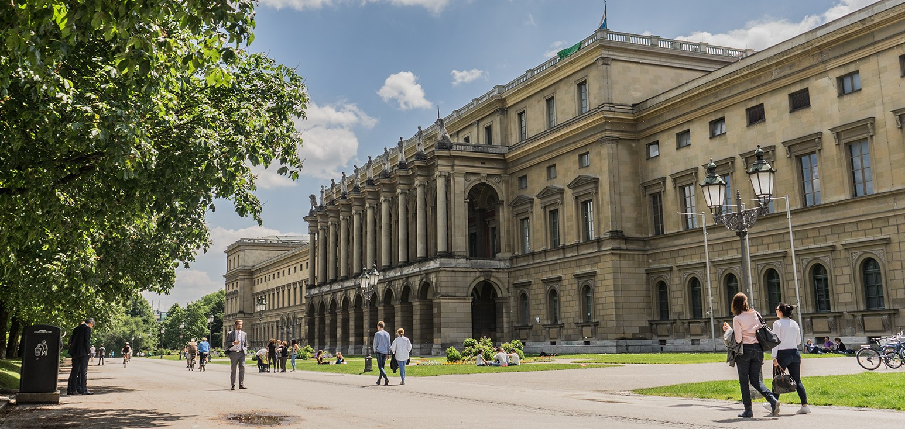
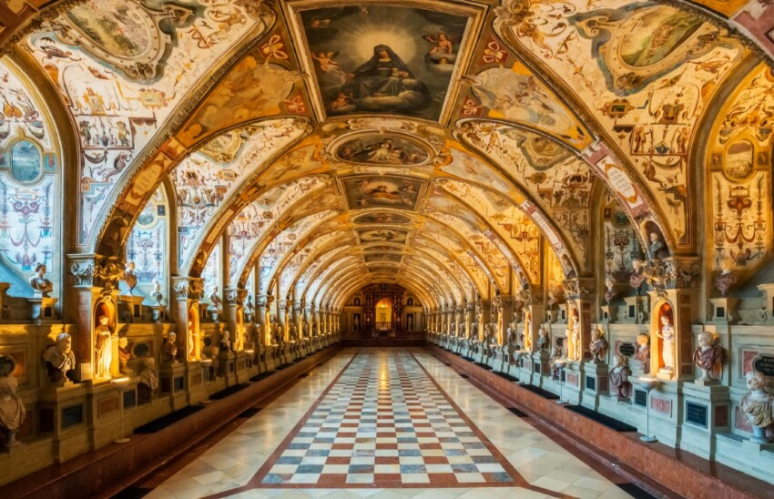

Il Palazzo della Residenza (Residenz München) è uno dei palazzi reali più grandi e prestigiosi d'Europa, situato nel cuore di Monaco di Baviera. Questo magnifico edificio fu la residenza principale dei duchi, elettori e re di Baviera per oltre 400 anni. Oggi è uno dei luoghi più visitati della città, celebre per la sua storia, la sua architettura e i suoi tesori artistici.
La costruzione del Palazzo della Residenza iniziò nel 1385, quando il duca Alberto III di Baviera decise di trasformare una piccola fortezza medievale in una residenza dignitosa per la sua famiglia. Con il tempo, il palazzo fu ampliato e rinnovato sotto diversi regnanti, in particolare sotto Ludovico I di Baviera, che lo trasformò in un complesso architettonico magnifico, e Carlo Teodoro, che lo arricchì con un'incredibile collezione di opere d'arte.
Il Palazzo della Residenza è un esempio straordinario di architettura rinascimentale, barocca e rococò. La struttura si sviluppa su un ampio complesso che include numerosi cortili, sale sontuose e giardini. La facciata principale è caratterizzata da una grande eleganza, mentre gli interni sono decorati con affreschi, stucchi e mobili pregiati che raccontano la magnificenza della corte bavarese.
All'interno, i visitatori possono ammirare le stanze reali, che includono il celebre Salone della Cattedrale e la Stanza del Tesoro, che ospita una vasta collezione di gioielli e manufatti. Il Giardino delle Rose e il Giardino del Palazzo offrono una fuga tranquilla dal trambusto della città, mentre le sale di rappresentanza sono decorate con sontuosi stucchi e opere d'arte.
Una delle attrazioni principali del Palazzo della Residenza è la sua collezione di tesori, che comprende una ricca selezione di gioielli, orologi, ceramiche e argenterie. La sala più famosa è la Stanza del Tesoro, dove si trovano alcuni dei pezzi più pregiati della collezione, risalenti ai secoli XVII e XVIII. Tra i pezzi più iconici spicca il Corone del Regno Bavarese, simbolo del potere della dinastia dei Wittelsbach.
Il Palazzo della Residenza è aperto al pubblico e offre tour guidati che consentono di esplorare le sue stanze, il museo e i giardini. I visitatori possono anche ammirare il famoso Teatro Cuvilliés, uno dei teatri rococò più belli di tutta la Germania, che ha ospitato numerosi eventi musicali e culturali. La visita al Palazzo della Residenza è un'esperienza unica per chi desidera immergersi nella storia e nell'arte della Baviera.